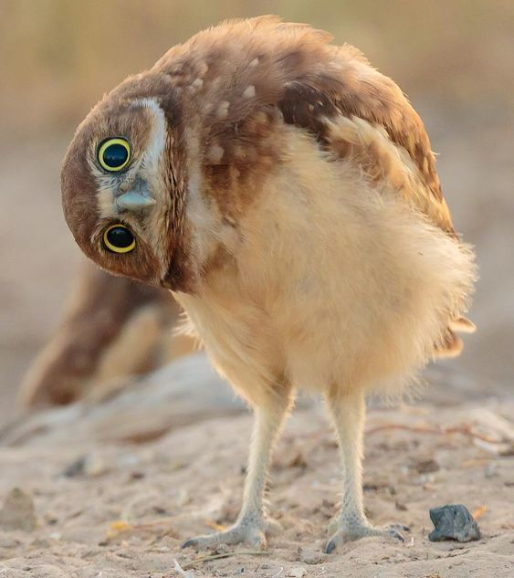
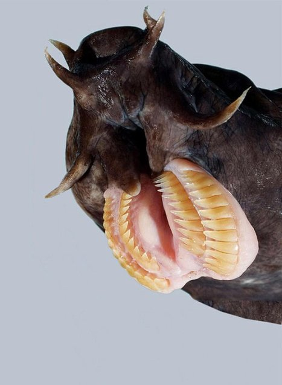
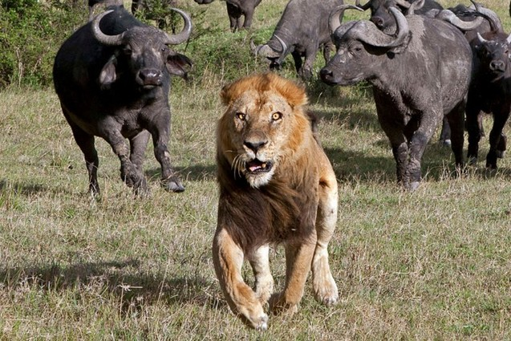
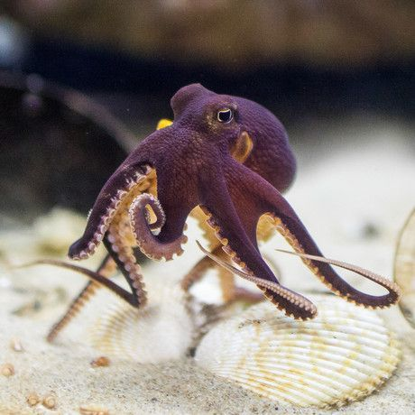
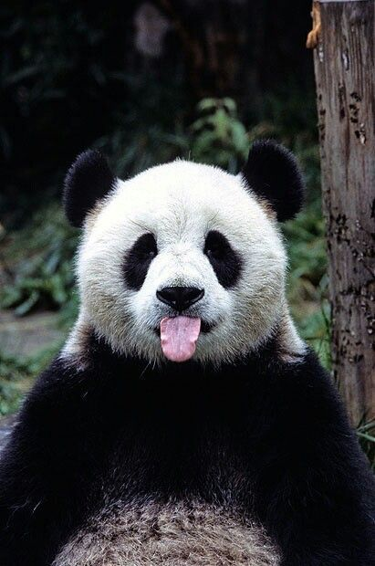
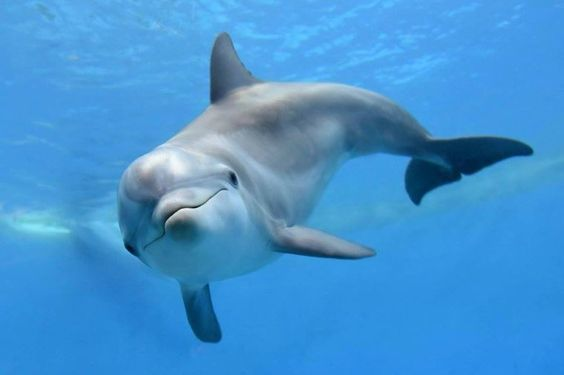
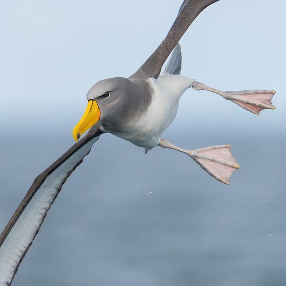
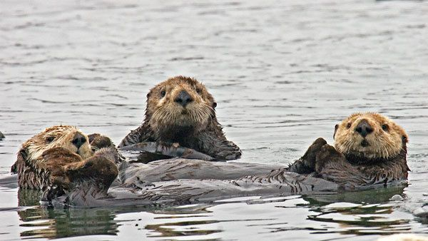
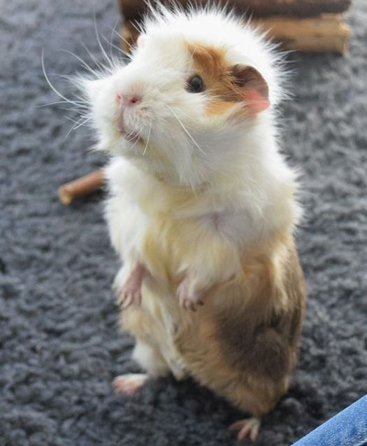
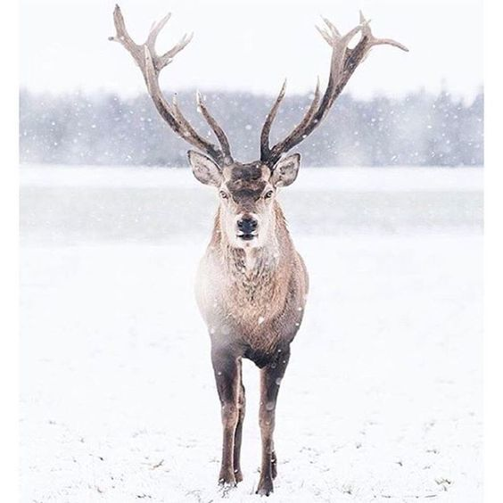

Цікаві факти про тварин (2007 рік)
Факт №1:
Тварини бувають не тільки домашніми — вони бувають дивні, можуть захоплювати і навіть шокувати. Приготуйся дізнатися про світ тварин те, що не розповідає жодний підручник біології! (Або розповідав, але ти прогуляв ці уроки). Обсяг очниць у сов майже цілком зайнятий очним яблуком, через що вони не можуть обертати очима і бачать тільки те, що перед ними. А ось голову вони повертають аж на 360 градусів!

Факт №2:
Єдині тварини на планеті, у яких на язику два ряди зубів, — водяні черви міксини. Ці серцеїди з вульгарною красою виростають до 70 сантиметрів і виїдають нутрощі у риб (так, і серце в тому числі).

Факт №3:
У хижаків (наприклад, у твого кота, що дрімає зараз на клавіатурі) очі розташовані спереду, щоб вчасно побачити здобич. А у травоїдних очі з боків, щоб вчасно побачити наближення хижака і встигнути втекти або ні.

Факт №4:
У восьминога прямокутна зіниця, що дає огляд на всі 340 градусів. У людини, до речі, — всього 190 градусів.

Факт №5:
У панд немає спеціального місця для сну — ні ліжка, ні гнізда. Тому вони засинають там, де опинилися в момент втоми. І якщо сон зморив їх в той момент, коли вони залізли на дерево, ну що ж, так і буде.

Факт №6:
Дельфін не просто спить з одним розплющеним оком — він спить з однією півкулею-сторожем мозку! Поки дельфін бачить сни про те, як під час виступу в дельфінарії виявив, що на ньому немає штанів, "чергова" півкуля стежить, щоб дельфін вчасно зробив вдих і не захлинувся.

Факт №7:
Альбатрос може спати прямо під час польоту. Діє птах за тим же принципом, що і дельфін: в польоті у альбатроса відпочиває одна половина мозку, а друга стежить, щоб він утримувався в повітрі і не залетів у турбіну літака.

Факт №8:
Калани (морські видри) тримають один одного за лапки, коли сплять, щоб їх не віднесло невідомо куди течією.

Факт №9:
Швейцарський закон забороняє тримати вдома одну морську свинку. Тільки пару, тому що свинка — тварина соціальна. А в разі смерті однієї особини швейцарець повинен терміново купити їй іншого друга. Так швейцарці і потрапляють у вічне рабство до морських свинок:)

Факт №10:
У Фінляндії під колесами автомобілів щорічно гинуло до 4000 оленів. Це в минулому. Винахідливі лісники придумали обприскувати роги оленів світловідбиваючою рідиною.
